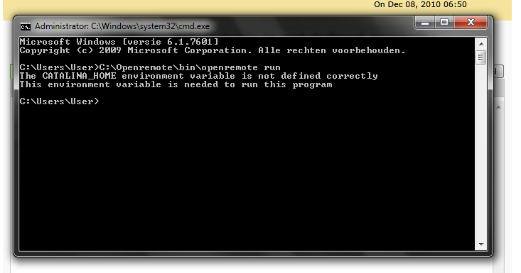
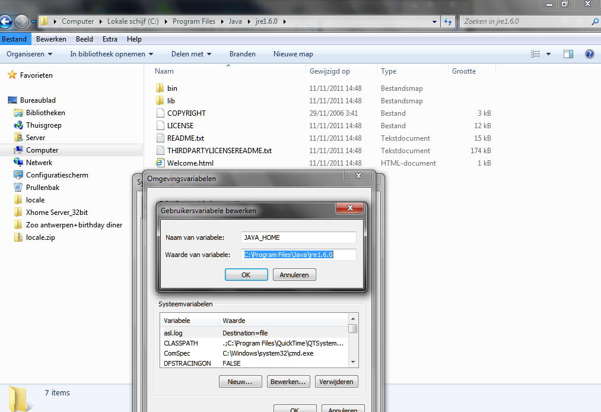
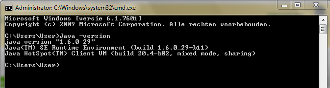
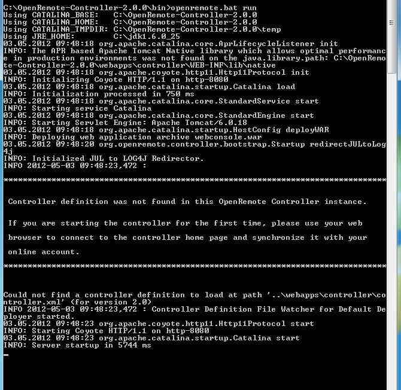

|
This page last changed on May 02, 2012 by people.
Hello,
I have problems to install the controller on Windows 7, i receive following error:
CATALINA_HOME environment variable is not defined correctly
Thanks for help



|
I just downloaded the 2.0 release from Sourceforge and had no problems with Windows7.
I have a JDK installed to c:\jdk1.6.0_25 and the JAVA_HOME variable points to that folder.
The only difference I see is, that I start using openremote.bat.
I did not set any CATALINA variables. These are normally set automatically.


Posted by mredeker at May 03, 2012 09:00
|
|
Just a hint. Philipe has JRE installed, just as I do. I had to set environment variable JRE_HOME to the path to get Openremote working.
Posted by pz1 at May 03, 2012 11:06
|
|
Hi,
I have try what Marcus and Zanstra says but the error is the same.
Can anybody try to resolve it for me, i have teamviewer installed.
Thanks
Posted by people at May 03, 2012 17:33
|
|
Since you only start with "openremote run", could it be that you renamed openremote.bat into only openremote?
The program checks for the existens of "openremote.bat".
Please make sure your start script is named "openremote.bat".
--Marcus
Posted by mredeker at May 03, 2012 20:38
|
|
I'm having the same problem. I'm running windows 7 64 bit. I can run tomcat from the command line, but when I try to install tomcat as a service, I get the same error. On the flip side, I can install tomcat from xampp or the installer and get tomcat to run as a service. When I copy the controller folder into webapps, I can access the page but I can't sync with my account. I get errors that say the path file doesn't exist.
Talk about frustrating. I checked and tested permissions, paths and configurations. I get the same result every time. I would list everything I have done, but I don't want to get cramps from typing so much.
Any thoughts?
Posted by mobileme at May 03, 2012 20:57
|
|
grrrr, the problem is always the same.
Can anybody configurate it for me? I have Teamviewer to access my pc...
thx
Posted by people at May 04, 2012 19:04
|
|
I am available now. Contact me at marcus (at) openremote (dot) org
Posted by mredeker at May 04, 2012 20:39
|
|
Problem solved.
@Everybody: Make sure you change into "Openremote/bin" folder and execute "openremote.bat run" in that folder.
Posted by mredeker at May 09, 2012 20:44
|
|
Nice job!
Posted by juha at May 11, 2012 09:27
|
|
Mike,
the default configuration in the controller assumes, that the controller was started with the current directory beeing "tomcat/bin".
If you use a windows service it's most likely that the runtime directory is something else.
Try to change the "resource.path=..." setting in "tomcat/webapps/controller/WEB-INF/classes/config.properties" and assign an absolute value.
--Marcus
Posted by mredeker at May 11, 2012 17:23
|
|
{kind=link}
{kind=link}
{kind=link}
{kind=link}